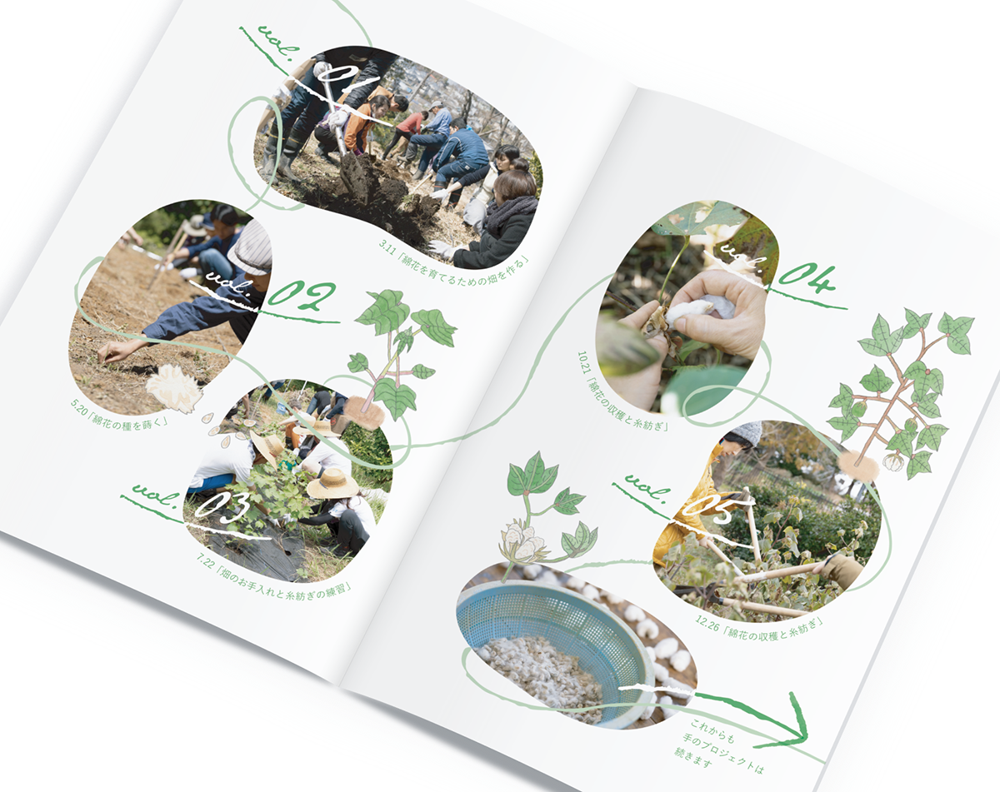
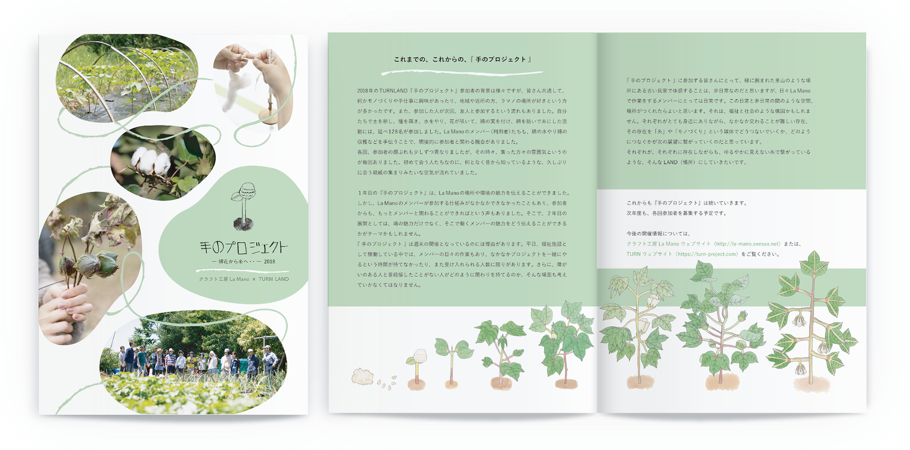
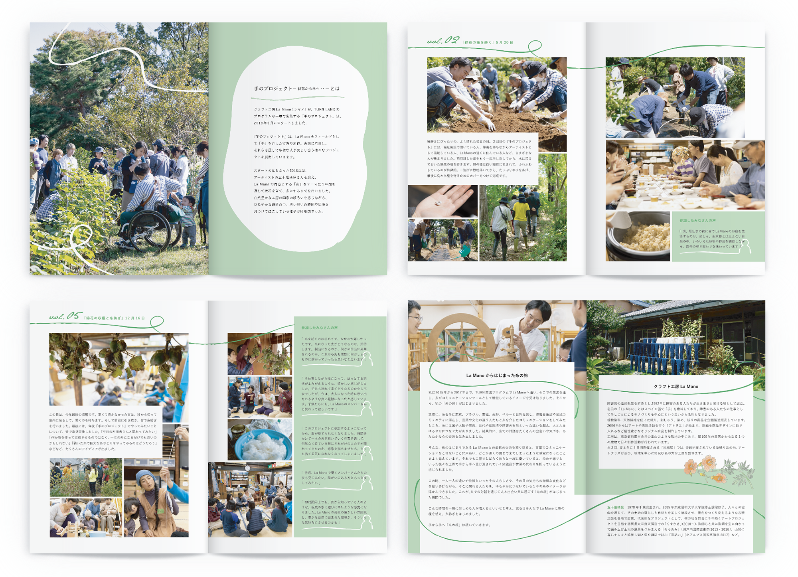

手のプロジェクト
クラフト工房 La Mano / NPO法人Art’s Embrace
リーフレット
2019. 03



リーフレット
2019. 03
アーティストが福祉施設や社会的支援を必要とする人のコミュニティへ赴き、出会いと共働活動を重ねるアートプロジェクト「TURN」と、一般就労が困難な人たちによる植物染料・天然繊維を使った表現活動を行う「クラフト工房La Mano」による『手のプロジェクト』の2018年度のまとめの冊子。1年間を通して畑を作り、綿花を育て、糸にするまでを行いました。
「La Mano」はスペイン語で「手」の意味。手作業によるクラフト感を感じさせる雰囲気でまとめ、町田の自然豊かな里山の中にあるアトリエの様を想起させる緑色をキーカラーに設定しました。また、糸を紡ぐというプロジェクト内容と合わせて、初年度であった2018年から来年度へと「繋ぐ」という意味も込めて、「糸」を思わせるいびつなテクスチャの曲線を配置。La Mano所属のアーティスト卓遼太郎さんのイラストをアクセントに、柔らかな印象でまとめました。
＜ BACK
© Moeri Ito